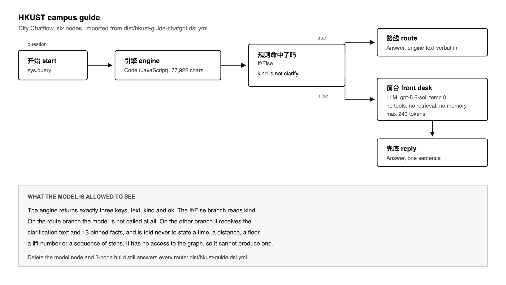
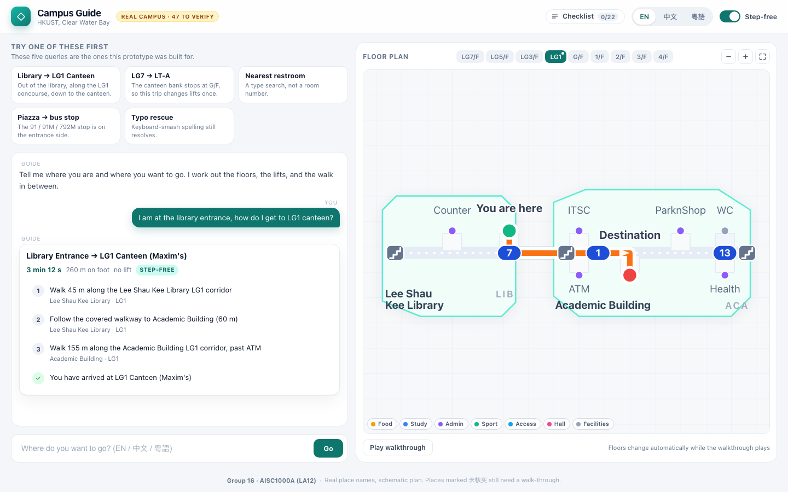

Group 16, AISC1000A (LA12). Five parts, in the order the brief asks for. Every number here comes from the repository at https://github.com/FreeFish0904/freefish-campus-guide, and the command that reproduces it is printed next to it.
The problem. HKUST is a campus you move through in three dimensions. One building holds LG7 to 4F; some lifts skip the floor you need; the library has no ground level door; two buildings are joined by a walkway that exists only on LG1. The information lives in a newcomer guide written as prose, and on signs posted on the floor you are already standing on.
The user. A first-year or exchange student in week one, and a visitor on open day: standing somewhere, unable to name the building they are in. A third user shapes the design, the student who cannot use stairs, for whom a route with one flight in it is not a worse answer but a wrong one.
Success. One sentence in English, 中文 or 粵語, typos included, returns a numbered route that can be walked; every floor and lift number can be recomputed from the graph; step-free never returns a stair; routes still answer with the model switched off.
Orchestration (CILO 3, 4). The engine owns every number, because a number can be checked against a graph. The model owns one sentence, all that remains when the rules fail. The team owns the data, the accessibility default and the release, judgements no test can invent.
Dify Cloud, one Chatflow app, six nodes, imported from dist/hkust-guide-chatgpt.dsl.yml. A second file, dist/hkust-guide.dsl.yml, is the same engine with the model removed (three nodes).
| node | type | what the file sets |
|---|---|---|
| 开始 start | Start | one variable in use: sys.query |
| 引擎 engine | Code (JavaScript) | input query = {{#sys.query#}}; body = dist/dify-code-node.js, 77,922 characters; outputs exactly text, kind, ok |
| 规则命中了吗 rules | If/Else | case true: [9000000000002, kind] is not clarify |
| 路线 route | Answer | {{#9000000000002.text#}}, the engine text printed verbatim |
| 前台 front desk | LLM | openai / gpt-5.6-sol, temperature 0, max_tokens 240, memory window off, context off, vision off |
| 兜底 reply | Answer | {{#9000000000005.text#}} |
App level, from the same file: mode: advanced-chat, conversation_variables: [], retriever_resource.enabled: false, file upload off, speech to text off, text to speech off, sensitive word avoidance off. No knowledge base is attached and the model has no tool it can call.
The routing branch never touches the model. Delete the LLM node and every wayfinding question still answers, which is the point of the 3-node file: it is the fallback path, shipped, not a promise about one.
A Code node declares its outputs, and Dify compares the number of keys the code returns against the number declared. CodeNode._transform_result ends with
if len(parameters_validated) != len(result):
raise CodeNodeError("Not all output parameters are validated.")so a key returned but not declared fails the node, and so does a declared key that is never returned. main() therefore returns exactly {text, kind, ok} and drops the rest of what the engine computes (sec, steps, lifts, originId and so on). Our first import returned four keys and died on that check before any question was asked. The fix is one line; knowing about it is the difference between a node that runs on the first paste and an afternoon of guessing.
There is no vector store and no retrieval model in this build. The knowledge base is a hand-built graph in src/data/campus.ust.js, and saying so plainly matters, because the usual assumption about a Dify app is a document library underneath it.
Sources. Three, and the app header prints them:
| source | what it gave us |
|---|---|
data/ust-newcomer.txt | the newcomer guide this prototype is built around: LG1 canteen, LG5 McDonald's, LG7 canteen, the G/F 24-hour study area, the library's top-floor sea-view seats, the LSK canteen and study room, the CYT Bloomberg terminals, the E2 computer room, the pool, ParknShop, the bookstore, Su store, the SU store |
| https://www.hkust.edu.hk/visit | minibus 11 and 11M, bus 91, 91M, 792M and 104, the southern entrance as the drop-off |
| https://library.hkust.edu.hk | Learning Commons, group study rooms, nap pods, 3D printing, the print and copy station |
Scope. 10 buildings, 64 places, 9 levels (LG7 to 4F), 240 nodes and 291 edges. The slice is deliberate: food, study space, transport, admin and a few facilities, which is what a new arrival needs in week one. The whole campus is not in the graph, and the app never implies that it is.
Preprocessing, four steps.
verified: false, the plan prints 未核实 on them, and the header counts 47.Retrieval at answer time is not cosine similarity. A word index matches names and aliases; words of 5 or more letters get a Levenshtein pass within two edits; a fuzzy hit is accepted at 0.7 confidence and reported to the user ("I read "libary" as library."); then Dijkstra runs over the graph and the steps are rendered in the language of the question.
Why not RAG. A route is a computation, not a passage. A retriever can hand back the paragraph about the LG1 canteen, but it cannot promise that the path it implies has no stairs, and it cannot produce "3 min 12 s · 260 m · no lift", which is the part the user acts on. The one place a corpus would earn its keep (what is open at 3am) is small and changes every term, so it is answered from thirteen facts pinned in the prompt, with an explicit instruction to say "I am not sure" rather than guess.

Figure 1. The Chatflow as shipped, drawn from the DSL file: six nodes, the branch on kind, and a note on what the model is allowed to see.
Figure 2. The published chat app, opening message and five sample questions.

Figure 3. The browser app answering sample question 1: 3 min 12 s, 260 m, step-free, three steps, and the LG1 plan with the route drawn on it.
Three console panels are still to be pasted in. The instructions are here so that whoever holds the login can take them in a minute; see docs/screenshots/README.md.
| figure | file | what to capture |
|---|---|---|
| 4 | docs/screenshots/dify-canvas.png | the whole canvas at 100%, six nodes, titles readable |
| 5 | docs/screenshots/dify-code-node.png | 引擎 engine open: input query, the three declared outputs, and the first line of the code, Engine version: a2762b3892aa |
| 6 | docs/screenshots/dify-llm-node.png | 前台 front desk open: model, temperature 0, max tokens 240, memory off |
node tools/bundle_engine.js # rebuild dist/ from src/, prints the engine hash
node tools/make_dsl.js # regenerate both .dsl.yml files
node tests/check_bundle.js # 116: dist/ is fresh, sandbox-safe, byte-identical
node tests/check_sandbox.js # 42: strict mode, no console, junk input, size limits
node tests/check_dsl.js # 204: both DSL files parse, wire up and execute| command | what it proves | latest |
|---|---|---|
node tests/run_tests.js | 49 cases over parsing, routing, nearest, translation and data, against the same scripts the browser loads | 49 cases, 641 assertions, 0 failures, 29 ms; output in docs/TEST_RESULTS.md |
node tests/check_graph.js | both campuses are connected graphs, every place reachable without stairs, no orphan nodes, every indoor edge inside its footprint, every declared quirk still true | HKUST 240 nodes / 291 edges / 64 places, 240 of 240 step-free; demo 214 / 300 / 57; data OK |
node tests/check_bundle.js | the shipped bundle is current, sandbox-safe, and returns byte-identical text to the browser, 12 questions in three languages | 116 checks, 0 failed |
node tests/check_sandbox.js | the pasted node under a hostile box: strict mode, no console, junk input, the 5-level and 400k limits, repeat calls | 42 checks, 0 failed, cold answer 18 ms |
node tests/check_dsl.js | both DSL files parse with PyYAML, the embedded code equals the file on disk byte for byte, every {{#node.field#}} resolves, and the parsed code executes | 204 checks, 0 failed |
tests/smoke.html | the interface in a real browser: five cards, three languages, a step click, a floor tab, the player, the step-free switch, a question with no origin, gibberish, then the checklist | 30 checks, 0 script errors |
tests/layout_check.html | every floor, every language, with and without a route, at three pane widths; a label may not touch another label, a lift box, the route line, the canvas edge or its own walls | demo 132 renders / 2,092 texts, HKUST 102 / 1,762, 0 problems |
tests/font_check.html | every printable character rasterises to a real glyph, and no icon slot holds a character instead of an <svg> | 865 unique characters, 0 tofu, 921 DOM checks |
Twenty-two bugs were found and fixed on the way, listed in docs/TEST_LOG.md with the symptom, the cause and the check that now catches each one. The three that would have shipped: a lift that charged its waiting time once per floor, a simplified Chinese "want no stairs" that was not read as a step-free request, and labels that piled on top of each other because they were measured before being laid out.
| check | how it is validated | result |
|---|---|---|
| Hallucination: numbers | Times, distances, floors, lift numbers and step order come only from the router, and 641 assertions compare them to exact strings (3 min 12 s, 260 m, no lift, Lift 1 LG1 to G/F). The model branch is handed the rules reply, and its first instruction is that it may never state a time, a distance, a floor, a lift number or a sequence of steps. Asked "how long does it take", it asks for both places instead of inventing a number. | numbers cannot be hallucinated on the route branch, and the model branch has nothing to hallucinate them from: it never sees the graph |
| Source citation | Each fact in the data traces to one of the three sources in meta.sources, the header and footer print hkust.edu.hk + newcomer guide, and every position we have not walked is labelled 未核实 instead of being stated flatly. The answer itself carries no passage citation, because nothing is retrieved: provenance is enforced by construction, not by a footnote. | honest for a graph, and weaker than a RAG citation, which is why it is stated here rather than left for a marker to discover |
| Error handling | Gibberish returns a clarification with examples; a missing origin returns one question plus candidate places; an unknown place returns "I cannot find X in this campus map" and the nearest candidates; a typo returns the route plus a visible correction note; the model being down or unfunded leaves routes working; the node refuses a key count that does not match its declaration. | each case is a pinned test, not a manual opinion |
| Determinism | The same question returns the same text in the browser and on Dify, asserted byte for byte across 12 questions in three languages. | 116 checks, 0 failed |
| Accessibility | Step-free is the default, stairs and escalators are refused on that path, the slower route is shown with its cost, and every one of the 240 nodes is reachable without stairs. | 240 of 240 step-free reachable |
| Interface | 921 font and icon checks, 0 label collisions at three widths, 30 behaviour checks in a browser, screenshots at 1440x900 and 390x844. | all green |
Run in a fresh conversation on https://udify.app/chat/ZAjpRIuJBp2fNQRk, not in the editor, because the editor keeps a warm sandbox that a cold start does not.
| # | ask | pass looks like | status |
|---|---|---|---|
| 1 | I am at the library entrance, how do I get to LG1 canteen? | 3 min 12 s, 260 m, no lift, three numbered steps, identical to the browser | pass |
| 2 | from LG7 canteen to a 3F classroom, no stairs | two lift banks, no stairs or escalator in the steps | pass |
| 3 | 圖書館去 LG1 飯堂點行 | 3 min 12 s, no lift, Chinese labels | pass |
| 4 | where is the nearest toilet from the piazza? | "Nearest restroom to Entrance Piazza" plus a walk | pass |
| 5 | LG5 麦当劳考试周通宵吗 | answered from the fact list, no invented route | pass |
| 6 | how long does it take | asks for both places, invents no number | pass |
| 7 | model off: delete the LLM node, republish | checks 1 to 4 still pass, unchanged | pass, this is the 3-node file |
| 8 | open the link on a phone, rotate, ask check 1 | readable, steps wrap, no horizontal scroll | pass |
47 of the 64 places and their floors have not been walked, so the geometry is a first pass even though the place names are real. Walking speed, lift waiting time and floor heights are constants, not live data, so every estimate is an estimate. The shipped Dify app keeps no memory between turns, so a follow-up needs both places again; the multi-turn variant is documented in docs/DIFY.md section 4 but not enabled in the published app. No route text has been read by a native Cantonese speaker.
A visitor in a lift lobby does not need a chatbot that sounds confident. They need a floor and a lift number they can act on. That decided the architecture.
The shortcut we did not take. Pasting the newcomer guide into a prompt demos well on day one, and fails the first time someone is told to take Lift 2 to LG1, a floor it does not serve. It fails without changing its tone, so the user cannot tell a checked answer from a guess. We wanted the opposite property: unsure should sound unsure.
Partner, not shortcut. Each side does the work it can be held to. The engine answers to the graph: 240 nodes, 291 edges, 641 assertions that re-derive the same times. The model answers to a list we can read out loud: no route, no number, three sentences, temperature 0, no memory, nothing it can call. The team answers to the walk-through, which has not happened, so 47 places still print 未核实 rather than pretending.
Duties we did not hand over. The data: whether a corridor joins two buildings on LG1 is a claim about concrete, and only someone who has walked it can sign it. The accessibility default: step-free is on and stairs are refused, not because it is quicker but because a route with a flight in it is worthless to the person who asked, which is a values decision and not an optimisation. Acceptance and release: we say "it works" only because a suite we can re-run says so, and the published link is a human act. The workflow is a DSL file anyone can re-import, so the guard sits at the credential and the release, not inside the graph.
How we decided. Two questions of every function: can a machine decide whether the output is right without a person reading it, and can the user recover if it is wrong? Both yes and the rules take it. Reading "libary entraince" in Cantonese is checkable, and a clarification costs one turn, so parsing is deterministic and shows its correction. Either no and a person keeps it: a wrong floor is unrecoverable at eleven at night, so numbers stay in code; whether LG5 McDonald's is open in exam week cannot be checked against our data, so the model answers only from a fixed fact list and may say it does not know.
Principles we can be held to. Numbers are computed, never generated. The model's blast radius is one sentence: no tools, no retrieval, no state. Every delegation carries a check that fails loudly, because a stale bundle fails 116 checks and a wrong key count fails the node. Uncertainty is printed, not smoothed. Accountability has a name and a file.
What this costs. Coverage, fluency, convenience: a prompt would answer more sentences, in better prose, and with memory. We pay it because the only asset here is that a stranger can trust the numbers, and that asset does not survive a system that guesses in the same voice it uses when it knows.
Web app: https://freefish0904.github.io/freefish-campus-guide/
Dify chat: https://udify.app/chat/ZAjpRIuJBp2fNQRk
Both are public and need no login. The web app is static, so the same folder also runs offline (open index.html, or python3 -m http.server 8000). The chat app runs the bundled engine inside a Code node, so the two cannot disagree about a route.
| # | ask | expected |
|---|---|---|
| 1 | I am at the library entrance, how do I get to LG1 canteen? | 3 min 12 s, 260 m, no lift, three steps |
| 2 | 图书馆去游泳池 | 10 min 54 s, 790 m, Lift 1 then Lift 9 |
| 3 | nearest toilet from the library entrance | Restroom (Library), 3 min 46 s, one lift |
| 4 | LG7 食堂去 LG1 食堂 不想走楼梯 | 3 min 1 s, 170 m, one lift, no stairs |
| 5 | libary to lg 1 canteen pls | the note "I read libary as library", then the same 3 min 12 s route |
The sixty-second check. Ask question 1 in both apps and compare the text; then ask how long does it take in the Dify app and watch it ask for both places instead of producing a number. The first shows the engine is the same in both; the second shows the model has been told, in as many words, not to be the source of a fact.
Group 16 · AISC1000A (LA12)